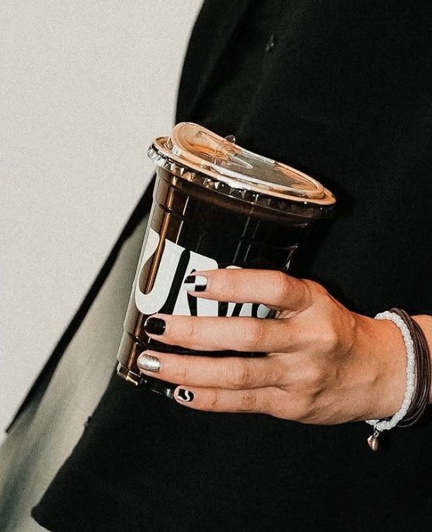
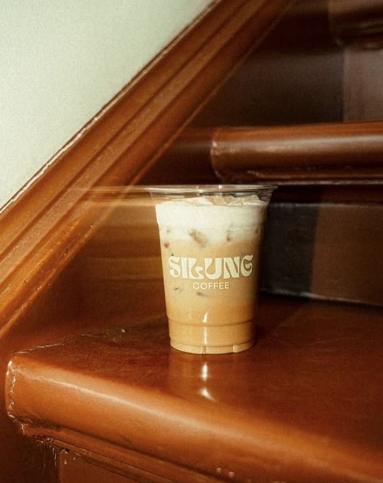
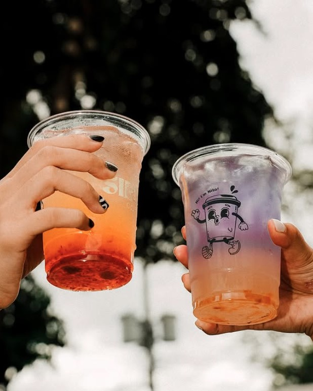

We partner with local farmers in the Cordillera region to bring you single-origin Arabica beans, ensuring every cup supports local communities and offers a taste of the Philippines' rich coffee heritage.
Nestled within the Tabnuan Cultural Center, our café doubles as an art gallery. We feature rotating exhibits from local artists, poets, and musicians, creating a space where creativity flourishes and community thrives.
Our skilled baristas craft a range of unique signature beverages, including our popular Sea-Salt Latte and Pandan Cold Brew. These innovative creations are a fusion of traditional Filipino flavors and modern coffee artistry.